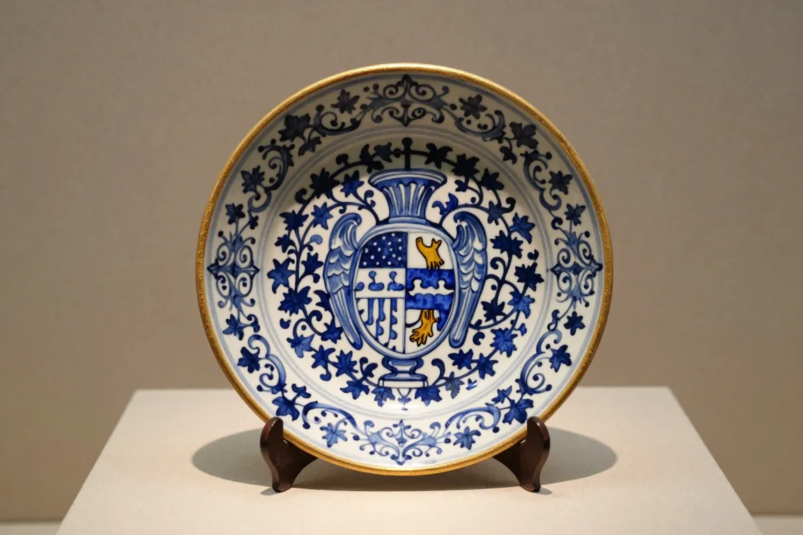

Spanish tin-glazed earthenware with a gold-copper lustre, made first by Muslim potters and later by Christian ones. Heraldic shields, plant scrolls and cobalt blue cover large dishes and tall jars.

Core thesis
A plain earthenware dish can serve a king when a white glaze, a gold lustre and a heraldic crest cover it in one dense pattern.
Design principles
Dip the earthenware in a white tin glaze and fire it at about 1000 °C.
Paint cobalt blue on the glaze first, for the outlines and the large forms.
Paint the lustre pigment over the glaze and fire a second time in smoke at 600 to 700 °C.
Fill the whole dish with scrolls, ivy, bryony leaves and a central emblem or a coat of arms.
Use radial bands that turn from the centre to the rim, and a raised boss at the centre.
Add a small raised relief to the rim or the cavetto, for the finest large dishes.
Keep the pattern dense and flat, with fine dots and hatching as background.